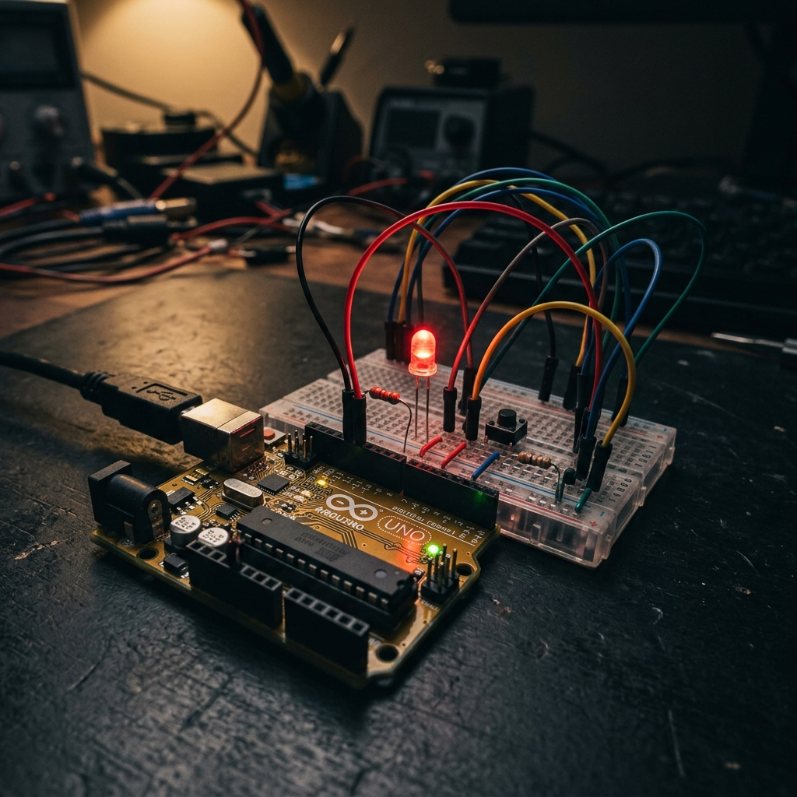

Pushbutton & LED Logic Control
This project demonstrates my ability to map real-world input to hardware output utilizing both the Arduino Uno R3 and the Raspberry Pi Pico. It serves as the first hands-on application of the theories learned during Week 3 of the Embedded Systems course.
Project Overview
The goal was to create a circuit where an LED is toggled on and off by a physical pushbutton. Because physical buttons can 'bounce'—causing multiple false signals for a single press—it was critical to implement debouncing logic in the firmware.
Live Simulations
Working with physical hardware during development can lead to rapid burnout of components. I utilized virtual simulation spaces to debug the circuitry before committing to solder.

This schematic visually routes the 5V line through the tactile switch and utilizes a pulldown resistor to maintain a clear LOW state when unpressed.
Tested alternative microcontroller architectures and C-based debouncing algorithms in this lightweight environment.
Core Logic
The firmware revolves around constantly polling the GPIO pin connected to the switch, verifying its state, and then outputting a HIGH or LOW signal to the LED pin.